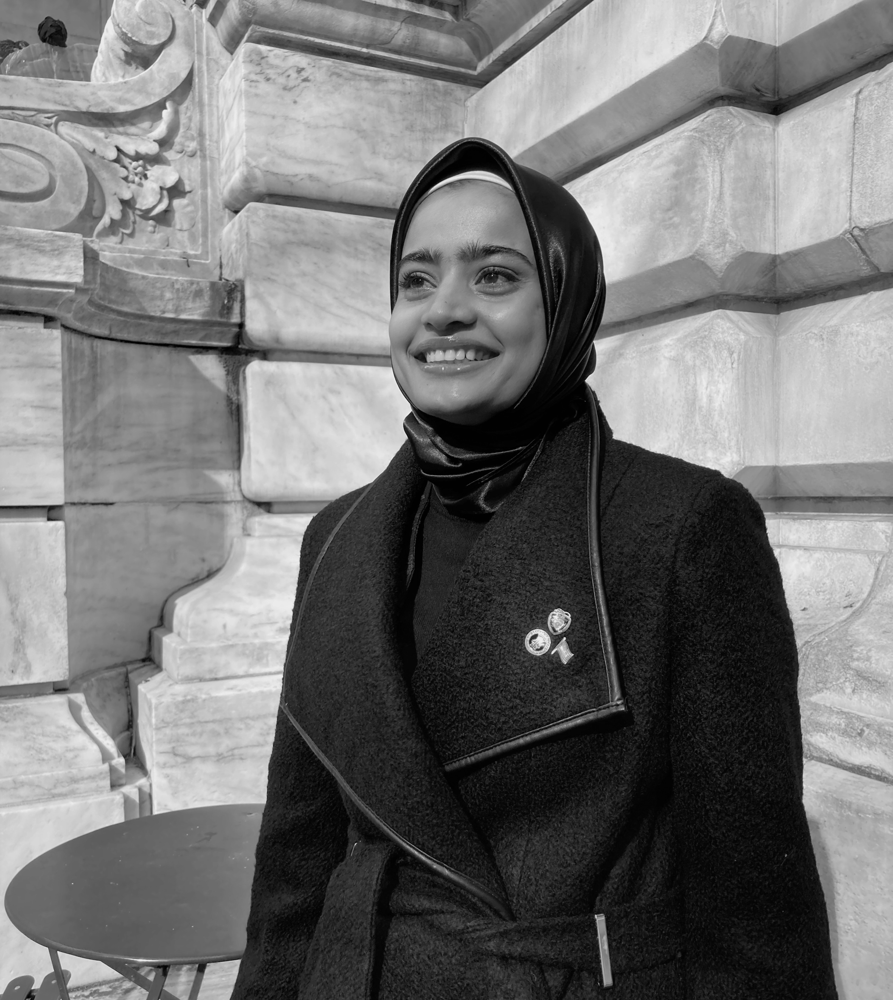
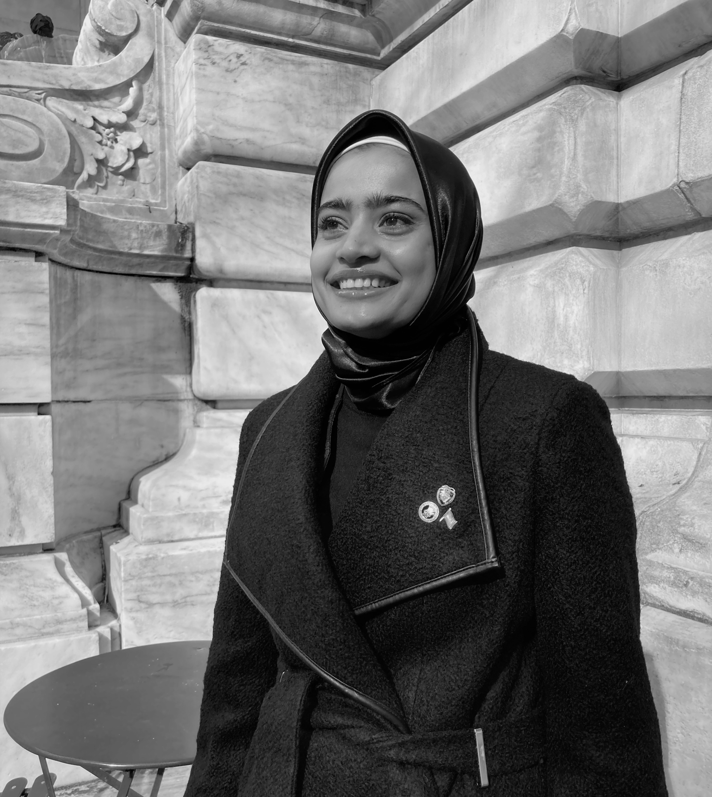

Hello, my name is Toli Begum. I moved from Bangladesh to the United States a few years ago. I finished High school in 2020 and continuing my education at Fordham University, Lincoln Center. I am double majoring in Middle East Studies and New Media & Digital Design. I am also minoring in the Language Arabic. I aspire to be an educator of Islamic History and Islamic law in the future. I am an emerging photographer, videographer, graphic designer, Web designer, and design thinker. I have always found myself fascinated by Islamic Humanities and Digital art. Most of my work revolves around my identity as Muslim and Bangladeshi because I can best represent them both with my experience and knowledge. From an early age, I've become a freestyle henna artist as a means of stress relieving. In my free time, I like to go on a run or skateboard, or read books.
Achievements:
- Successfully Completion Of Explainer Program Internship at New York Botanical Gaarden
- Successfully Completion Of High School Internship At The Metropolitan Museum Of Art
- Successfully Completion Of New Media Arts Youth Remixing History
- High Achievement In The Field Of English As A New Language
- Fordham College at Lincoln Center Dean's List (2021-2022)
- New York Scholastic Awards (2 Regional Fashion Awards)
- Perfect Attendance Award (2017-2020)
- Most Active Participant (2017)
- Honor Roll (2017-2020)
Skills:
- Familiar with utilizing DSLR for photos and Videos.
- Multilingual(Bangla, English, Hindi, and Arabic)
- Familiar with Adobe Creative Suite
- Adobe Lightroom Classic
- Adobe Lightroom Classic
- Adobe Photoshop
- Adobe Illustrator
- Adobe Premiere
- Adobe Audition
- Adobe InDesign
- Web Design
- HTML & CSS
- Javascript & Jquary
- Basic C++ coding
- Prototyping
- Ability to Work Under Pressure, Initiative, Decision Making, Time Management, Self-learner, Problem solver, Leadership, Adaptability, Teamwork, Creativity
--------------------------
Link to my CV
--------------------------